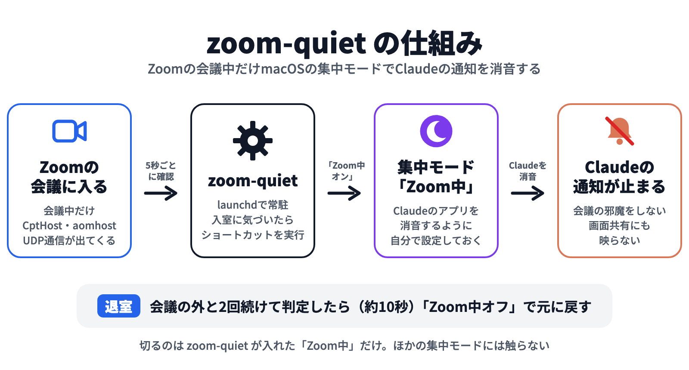

zoom-quiet
Zoomの会議中だけClaudeの通知を止める（macOS向け・オープンソース）
仕組み

準備は3ステップ（約3分）
- 集中モード「Zoom中」を作り、Claudeのアプリを消音に設定する
- ショートカット「Zoom中オン」「Zoom中オフ」を作る（手順は docs/setup.md）
- 次のコマンドで自動起動を有効にする
git clone https://github.com/chaenmasahiro0425/zoom-quiet.git ~/zoom-quiet
~/zoom-quiet/bin/zoom-quiet install